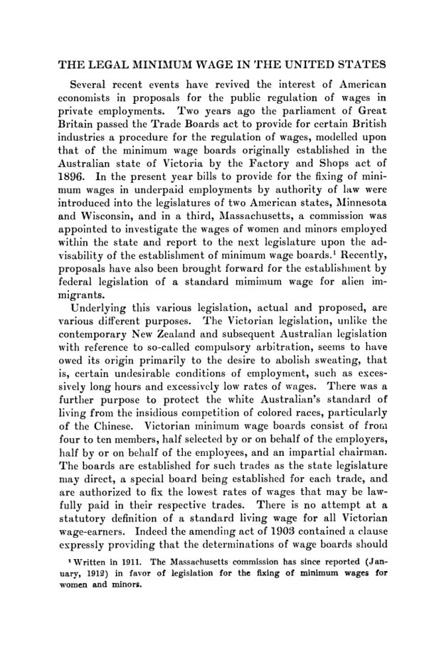

Holcombe, 1912: um salário mínimo legal nos Estados Unidos?
Leitura: 8 min
Holcombe sustenta que o obstáculo ao salário mínimo americano era a leitura que os tribunais faziam da Constituição, e que ela cederia diante de provas de necessidade e de uma lei bem desenhada.


Em 1911, projetos para fixar por lei salários mínimos em empregos mal pagos foram apresentados nas legislaturas de dois estados americanos, Minnesota e Wisconsin. Em Massachusetts, uma comissão foi nomeada para investigar os salários de mulheres e menores. Uma nota de rodapé informa que o artigo foi escrito em 1911 e que a comissão de Massachusetts recomendou a legislação em janeiro de 1912.
A. N. Holcombe, de Harvard, parte de uma distinção que o debate costumava confundir. Uma coisa é regular salários em geral, como faziam os conselhos de Victoria, na Austrália, e as juntas inglesas de 1909. Outra é garantir um piso que permita um padrão de vida normal. As duas têm propósitos diferentes e, nos Estados Unidos, um estatuto constitucional diferente.
O que faziam os conselhos de Victoria?
Os conselhos nasceram do Factory and Shops Act de 1896, sobretudo para abolir o sweating, isto é, jornadas excessivas e salários baixos demais. Cada um tem de quatro a dez membros, metade escolhida pelos patrões, metade pelos empregados, e um presidente imparcial. Fixam as menores taxas legais do ofício e podem fazê-lo também para os trabalhadores qualificados e bem pagos.
Na prática, em vez de calcular o custo de vida padrão, os conselhos reuniram patrões e assalariados para adotar regras comuns, entre elas taxas de salário aceitáveis para ambos. Seu papel principal passou a ser publicar os salários correntes de cada grau de trabalho e reajustá-los às condições econômicas. A proteção do padrão de vida, conclui Holcombe, tornou-se incidental; a função central era a paz industrial.
As juntas inglesas copiaram o procedimento: também negociam, e por isso o mínimo varia de ofício para ofício e até entre ramos de um mesmo ofício. Para Holcombe, isso é mais que um piso vital. É regulação de salários em geral e, do ponto de vista americano, pertence à mesma classe do sistema de Victoria.
Onde estava o obstáculo americano?
Na Constituição, tal como interpretada. Desde 1868, ninguém pode ser privado da vida, da liberdade ou da propriedade sem o devido processo legal. A Suprema Corte federal entendera liberdade como ausência de controle e propriedade como incluindo oportunidades de contratar. O efeito foi ler na Constituição uma doutrina que ela não expressa em lugar nenhum: a liberdade de contrato.
Na maioria dos estados, essa liberdade valia só para os homens; mulheres e menores eram tratados como tutelados do Estado. Daí a estratégia de limitar os projetos a eles, como em Minnesota e Massachusetts. Holcombe a julga frágil em dois pontos. Em estados como Illinois, as mulheres tinham os mesmos direitos constitucionais que os homens. E, se o piso vital se justifica pela manutenção da família, ele se aplicaria com mais propriedade aos homens como chefes de família.
A expressão liberdade de contrato era nova. Francis Lieber não a menciona em seu livro de 1852 sobre liberdade civil; ela aparece pela primeira vez numa decisão de um tribunal da Pensilvânia de 1886. Holcombe lembra a observação do juiz Holmes, no voto vencido do caso dos padeiros de Nova York.
Segundo Holmes, a maioria do tribunal “havia lido na décima quarta emenda a Social Statics de Herbert Spencer”. (“had read into the fourteenth amendment the Social Statics of Herbert Spencer”)
O argumento histórico vem a seguir. Quando o devido processo entrou na quinta emenda, a Inglaterra ainda fixava salários por autoridade pública, sob o estatuto elisabetano dos artífices, e ninguém via nisso violação do devido processo. Para Holcombe, a interpretação que ameaçava os legislativos estaduais era obra dos tribunais, não do povo de 1868, e podia ser desfeita por outros juízes.
“Os princípios do laissez faire, tendo sido lidos na constituição, podem ser lidos fora dela de novo.” (“The principles of laissez faire, having been read into the constitution, can be read out again.”)
O precedente estava em Illinois, cujo tribunal primeiro recusou uma lei sobre a jornada das mulheres e depois, no segundo caso Ritchie, reviu a decisão à luz das condições reais de emprego. Para Holcombe, não há diferença constitucional essencial entre regular jornadas e regular salários: em ambos os casos, tudo depende de provar a necessidade e a adequação da medida.
Por que o modelo de Wisconsin, e não o de Victoria?
Porque o legislativo americano não pode delegar poder legislativo. Uma junta de salários é órgão administrativo; cabe ao próprio legislativo definir os princípios que ela aplicará. Como nenhum legislativo estava pronto para definir salários justos e razoáveis em geral, os conselhos de modelo vitoriano estavam fora de alcance. Restava definir apenas o princípio de um mínimo vital.
Foi o que fez o projeto de Wisconsin. Definia o mínimo como a remuneração que permitisse ao empregado obter, para si e para seus dependentes, o necessário conforto da vida. A expressão já constava das constituições de sete estados, nas leis que protegiam bens do devedor, e por isso já tinha sido definida pelos tribunais. A aplicação caberia a uma comissão industrial, com poder de investigar, ouvir as partes e criar juntas do tipo inglês.
Quantos ganhavam menos que o necessário?
Para o padrão de vida, Holcombe usa a estimativa de Frank H. Streightoff, de US$ 650 por ano para uma família nas cidades menores do Norte; o dr. Chapin falava em US$ 800 ou mais em Nova York. Para evitar exagero, Holcombe adota US$ 600. Nas 16 indústrias estudadas pela Comissão de Imigração, a renda média anual das famílias era de US$ 721, mas 31,3% delas recebiam menos de US$ 500.
Com esses números, Holcombe aceita a estimativa de Streightoff de que pelo menos cinco milhões de homens adultos recebiam menos de US$ 600 por ano pelo seu trabalho, e dá por estabelecido que muitos trabalhadores americanos ganhavam menos que um salário vital.
Quem ganharia e quem perderia com o mínimo?
O efeito imediato seria acabar com o emprego de adultos normais abaixo do piso: alguns receberiam o aumento, outros perderiam o emprego. Tudo dependeria da eficiência de cada trabalhador e da demanda por seus serviços. Em lojas de departamentos e lavanderias, que servem mercados locais sem concorrência de fora, o aumento poderia ser pago sem queda relevante da demanda. Em fiações de algodão e fábricas de calçados, expostas à concorrência, o mínimo poderia reduzir o emprego em vez de elevar salários.
As indústrias que só sobrevivem pagando salários anormalmente baixos, parasitárias na expressão dos Webb, o país dispensaria. Com os dados por grupo de imigrantes da mesma comissão, Holcombe observa ainda que os ganhos de um mesmo grupo variavam muito de indústria para indústria, sinal de que a capacidade de ganho dependia em boa parte da oportunidade industrial.
Os efeitos indiretos seriam quatro: estender aos mais fracos as vantagens que os sindicatos fortes obtinham para seus membros; separar com mais nitidez os inempregáveis dos desempregados; e concentrar a concorrência entre trabalhadores e entre patrões na eficiência, e não na disposição de aceitar ou impor um salário de fome. No longo prazo, adverte, os salários dependem da eficiência: salário mínimo e educação industrial teriam de andar juntos.
Na minha leitura
Na minha leitura, o ponto mais duradouro do artigo é a separação entre dois instrumentos. Um conselho que negocia salários de todos os graus de um ofício é um mecanismo de barganha coletiva assistida; um piso vital é uma regra de proteção mínima. Os dois exigem provas diferentes, um da necessidade de conter o conflito industrial, outro da extensão do subpagamento, e Holcombe faz o desenho jurídico seguir o objetivo econômico.
O mesmo cuidado aparece na análise de efeitos. Em vez de afirmar que o mínimo eleva ou destrói empregos, Holcombe faz o resultado depender do mercado: local ou exposto à concorrência, com demanda mais ou menos sensível ao preço, com aumento mais ou menos rápido. É essa condicionalidade, mais que a conclusão favorável, que torna o texto útil para o debate posterior.
Glossário
- Sweating
- condição de ofícios com jornadas excessivas e salários baixos demais.
- Conselho de salários (wage board)
- junta de patrões e empregados, com presidente imparcial, que fixa as menores taxas legais de um ofício.
- Devido processo legal
- garantia constitucional de que ninguém será privado de vida, liberdade ou propriedade sem procedimento legal adequado.
- Liberdade de contrato
- doutrina judicial que tratava a liberdade de pactuar salários e jornadas como protegida pela Constituição.
- Poder de polícia
- competência dos estados para legislar em defesa da saúde, da segurança e do bem-estar geral.
- Indústria parasitária
- expressão dos Webb para o ramo que só se mantém pagando salários abaixo do necessário para viver.
Fontes
- The Legal Minimum Wage in the United States — A. N. Holcombe (Harvard University) (pp. 21–37). JSTOR · Internet Archive (PDF)
- Edição completa, com os demais artigos: Nº 117 do Arquivo.
Documento em domínio público (EUA, publicado antes de 1931), via JSTOR Early Journal Content e Internet Archive. Resumo e comentário do autor deste site, sem afiliação com a American Economic Association. Encontrou um erro? Escreva: a correção é publicada no próprio texto, com data.
↑ Nº 117 · Março de 1912: salário mínimo, notas bancárias e progresso Bell, 1912: por que os bancos não viam lucro nas notas? →